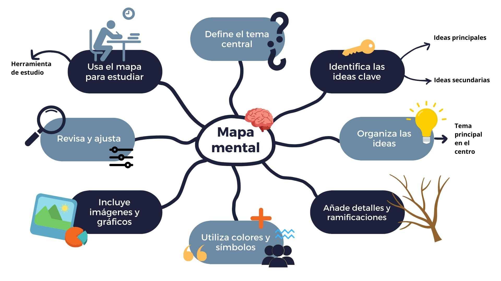

Mapas Mentales y Conceptuales: Organiza tus Ideas
Los mapas mentales y conceptuales son herramientas visuales poderosas para organizar la información, facilitar la comprensión y mejorar la memoria. A diferencia de las notas lineales, permiten ver las conexiones entre las ideas de una manera intuitiva y creativa, lo que los hace ideales para la planificación de proyectos, el resumen de lecturas y la preparación de exámenes.
¿Qué es un Mapa Mental?
Un mapa mental es un diagrama usado para representar palabras, ideas, tareas, dibujos u otros conceptos ligados y dispuestos radialmente alrededor de una palabra clave o de una idea central. Se utilizan líneas, colores, imágenes y símbolos para crear una estructura no lineal que imita la forma en que el cerebro procesa la información.
- Idea Central: El tema principal se ubica en el centro.
- Ramas Principales: Surgen del centro, representando los temas clave.
- Ramas Secundarias: Detallan las ramas principales.
- Palabras Clave e Imágenes: Usa palabras sueltas y muchos iconos o dibujos.
- Colores y Códigos: Utiliza colores para categorizar y organizar ideas.
¿Qué es un Mapa Conceptual?
Mientras que los mapas mentales son más libres y creativos, los mapas conceptuales son más estructurados y jerárquicos. Se enfocan en las relaciones entre conceptos específicos, utilizando nodos (conceptos) y líneas (relaciones) que a menudo llevan palabras de enlace para explicar cómo se conectan los conceptos.
- Jerarquía: Los conceptos más generales van arriba, los más específicos abajo.
- Nodos: Los conceptos se encierran en figuras (círculos, óvalos, rectángulos).
- Líneas y Enlaces: Las líneas conectan los nodos y las palabras de enlace sobre las líneas describen la relación (ej. "causa", "requiere", "incluye").
- Ejemplos: Pueden incluir ejemplos al final de las ramas más bajas.
Cómo Aplicarlos en tus Estudios:
Ambos son excelentes para:
- Resumir material: Convierte capítulos de libros o apuntes en un esquema visual.
- Brainstorming: Genera ideas para ensayos o proyectos.
- Planificación: Estructura tareas y objetivos para un proyecto o un semestre.
- Repaso: Un vistazo rápido a un mapa puede reactivar toda la información en tu mente.
¡Anímate a probarlos! Experimenta con colores, imágenes y tu propia lógica. Verás cómo tu cerebro se activa de una manera diferente al organizar tus conocimientos.